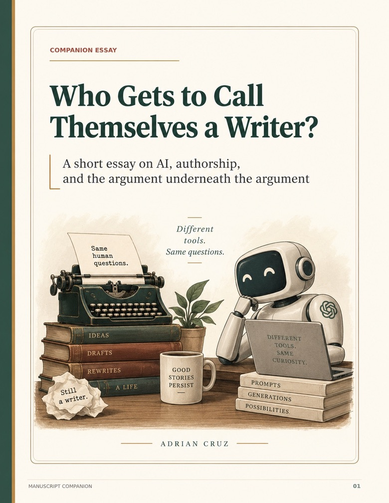
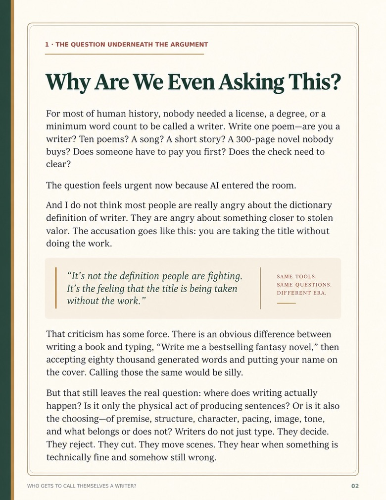
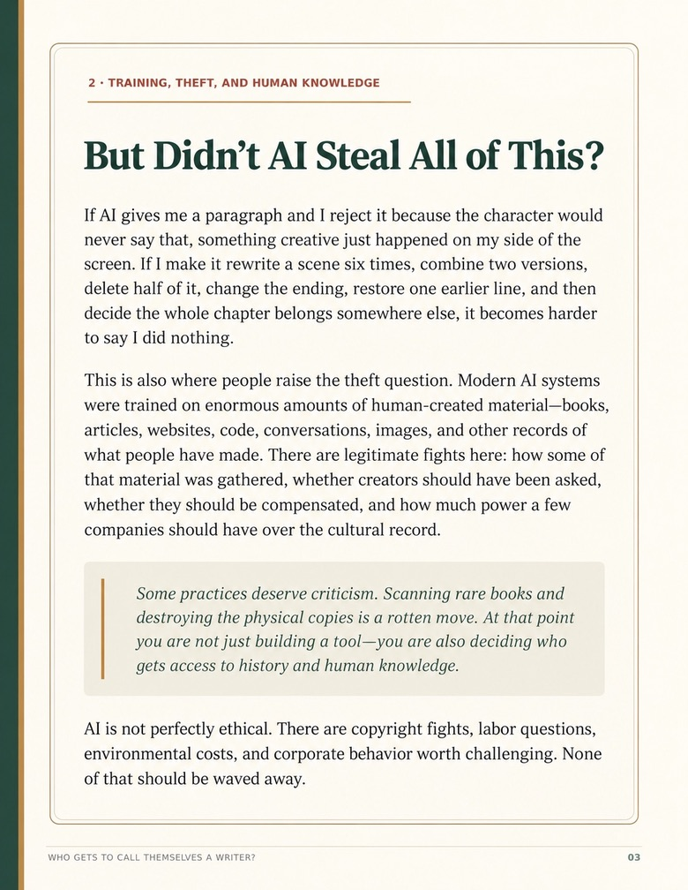
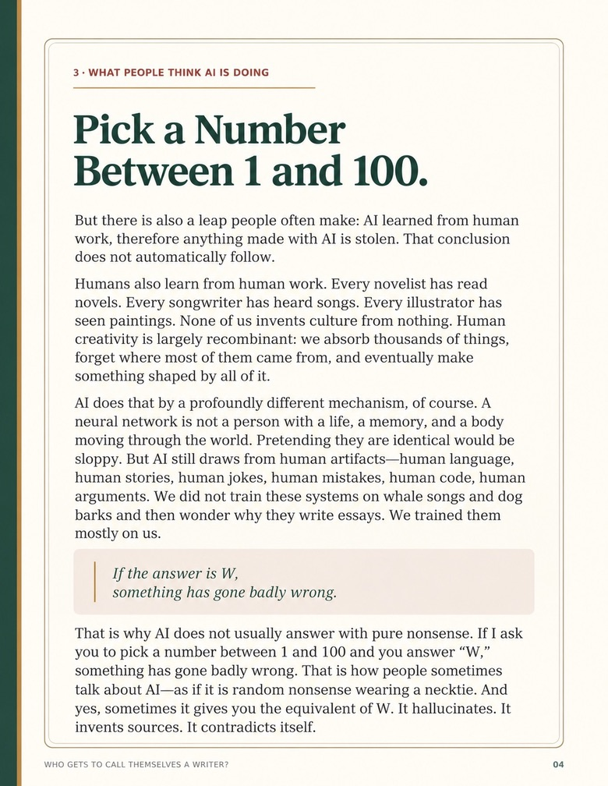
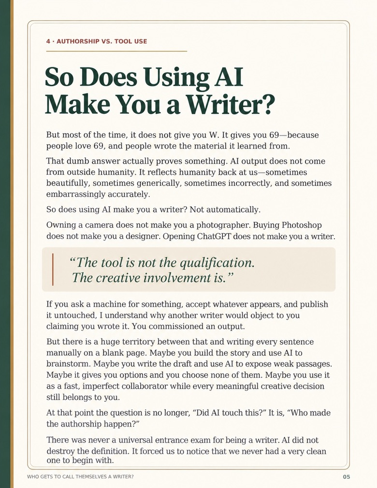

A SHORT ESSAY ON AI & AUTHORSHIP
Who Gets to Call Themselves a Writer?
The argument over AI writing is usually framed as a fight over the tool. I think the more interesting question is who made the creative decisions.





If you want to see the creative work and guides that grew out of this argument, they live separately.
Visit Art Direct AI